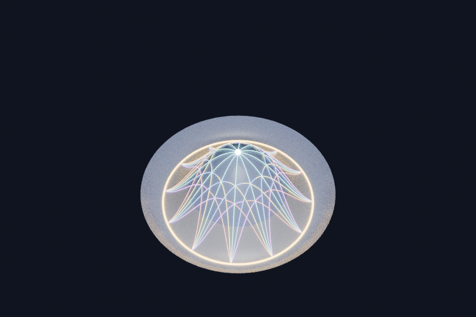
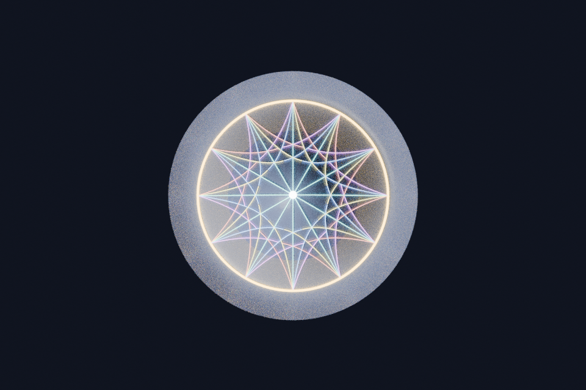
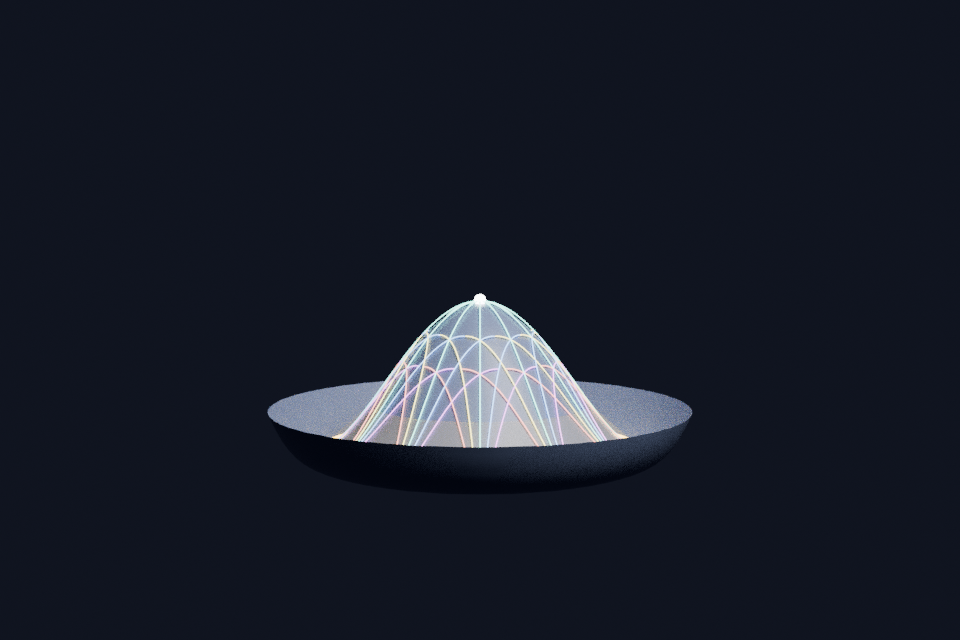
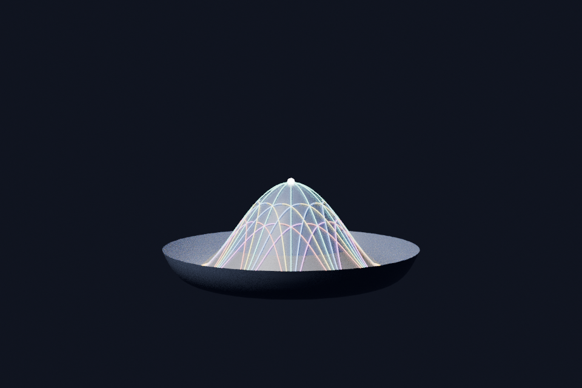
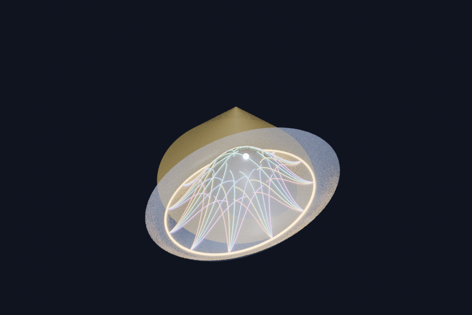
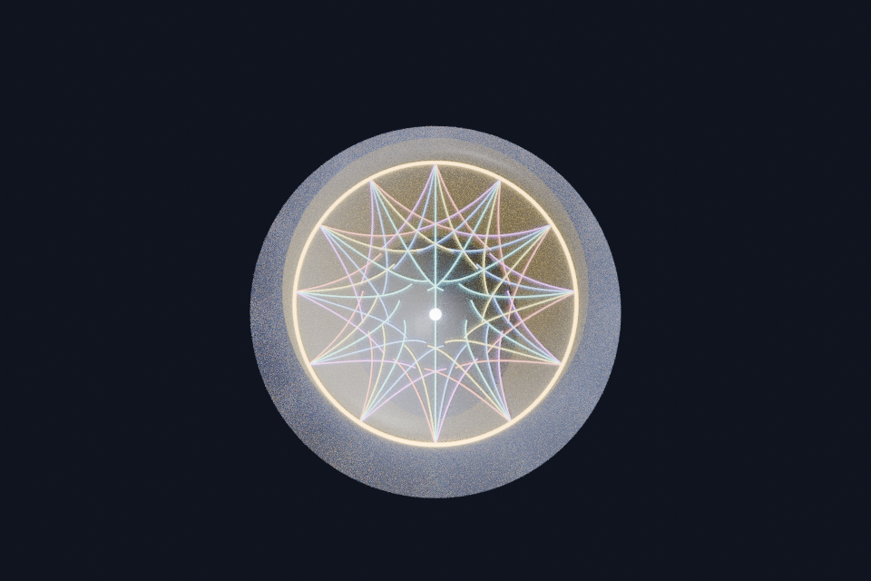
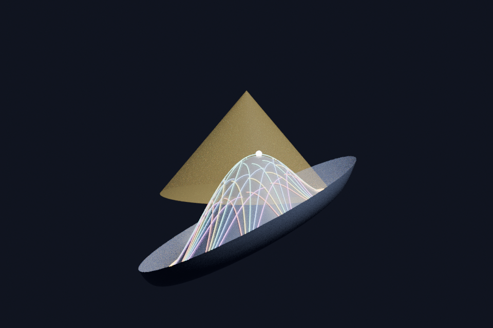
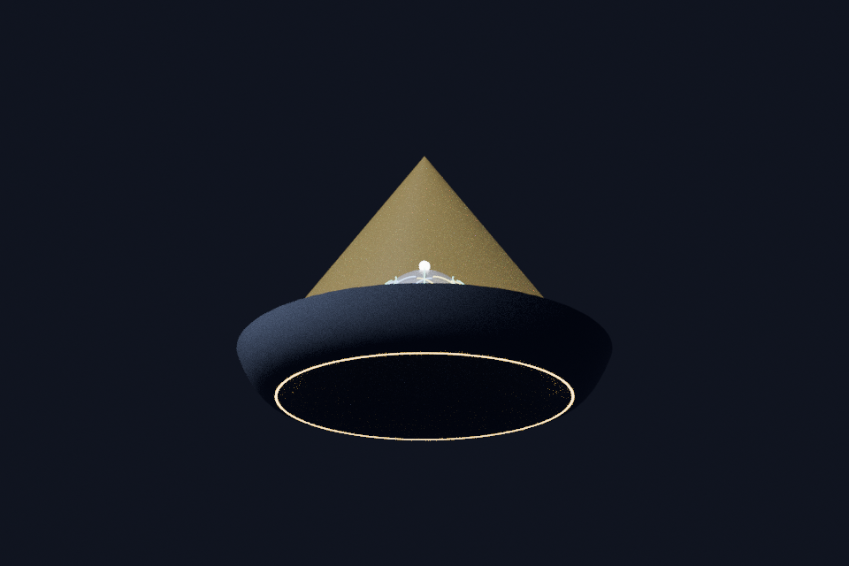
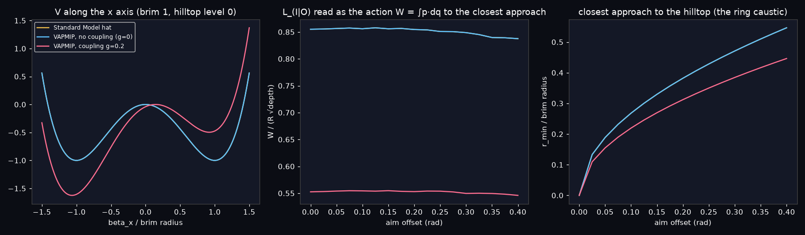

The Witch's Hat: the brim, the hat and the path of action, as one object
Static stills, three axis views and an isometric view of each of the two Lagrangians, kept separate. Rendered 2026-11-18 from the Witch's Hat engine core (ValaQuenta/modules/witches_hat) with Blender. Radii and heights are normalised: brim radius 1, depth 1, hilltop level 0.
blue-grey surface = the hat V(β), established formorange ring = the brim (the minima)coloured curves = the path of action: classical paths from the brim aimed at the hilltop, colour = aim offsetgold cone = the author's cone of dynamic action (conjecture)
1. The Standard Model Lagrangian (established)
V(h) = −μ²h²/2 + λh⁴/4 with the measured m_h = 125.25 GeV and v = 246.22 GeV (λ = 0.1294). Rotationally symmetric: the paths converge on the hilltop at the centre.




2. The VAPMIP (monad) Lagrangian (the author's)
V = −((1/φ)·L_bias + L_coup): the Mexican-hat bias term scaled by 1/φ plus the Yukawa coupling −(g/φ)ψ·β, drawn here with g = 0.2 and ψ = (1, 0) so the tilt is visible (the code default g = 0.01 is almost symmetric). The coupling moves the hilltop, the point the paths aim at.




3. L_(I|O) in action, and the comparison

| model | W, aim 0 | W, aim 0.4 | r_min, aim 0 | r_min, aim 0.4 | hilltop offset / brim |
|---|---|---|---|---|---|
| Standard Model hat | 0.8551 | 0.8375 | 0.0000 | 0.5464 | 0.000 |
| VAPMIP, no coupling (g=0) | 0.8551 | 0.8375 | 0.0000 | 0.5464 | 0.000 |
| VAPMIP, coupling g=0.2 | 0.5526 | 0.5460 | 0.0000 | 0.4462 | 0.144 |
W in units R√depth of the untilted hat (the tilted model's W(0) differs because the start point sits lower on the tilted surface). L_(I|O) is read here as the action of the actual path (the canonical form: L_(I|O) − L is the bent path against the straight one); J_red·J_blue is not separately defined in code.
What the comparison found
- Isometric, to the digit, without coupling. The VAPMIP hat with g = 0 and the Standard-Model hat give identical W and identical closest approaches in the normalised chart (tested). Both are the same quartic; the isometry is the identity map in brim-and-depth units.
- The coupling is the aiming mechanism. The Yukawa term −(g/φ)ψ·β is linear in β: it tilts the hat toward the information ψ and moves the hilltop (0.144 brim radii at g = 0.2). The paths aim at the new hilltop; the point focus survives, displaced.
- Two defects of the coded VAPMIP bias term, recorded not corrected. (1) As coded,
L_bias = ½μ²β² − ¼λβ⁴with the default μ² = −1 has V = −L a plain bowl, no hat; the docstring's "μ² < 0 breaks the symmetry" needs the opposite sign of the μ² term. (2) With the defaults μ² = −1, λ = 0.5 the brim is at √2, while the default vev is 1.0 (they agree only at λ = 1). - The action is nearly independent of the launch angle (0.8619 → 0.8314 for aim 0.01 → 0.4 in the Standard-Model hat): the signature of a stationary action. An error in my first simulator (arc length reported as action) is corrected in the repo.
Established: the Higgs hat, classical path mechanics, the brim as the minimum. The author's: the VAPMIP Lagrangian as the derived information propagation, the cone of dynamic action, the focal-point mechanics. Not shown: eight hats on four hyper axes; that is the next object.